코드가 영상이 되는 원리
코드깎는노인의 영상은 편집 프로그램에서 손으로 움직이거나 카메라로 찍은 게 아니에요. 코딩 에이전트가 웹 기술로 코드를 짜고, 브라우저가 그 코드를 그림으로 그린 거예요. 이번 영상은 그 원리와 직접 만들어 보는 방법을 다뤄요. 코드를 몰라도 괜찮아요. 코드는 AI(Artificial Intelligence)가 짜니까, 어떤 영상이 가능하고 어떤 식으로 부탁하는지가 더 중요하다고 해요.
영상은 t를 넣으면 그림이 나오는 함수
브라우저는 웹페이지 코드를 읽어 화면에 그려요. 동그라미의 가로 위치를 숫자 하나로 두고 그 숫자를 조금씩 바꿔 가며 다시 그리면 동그라미가 움직여요. 영상은 1초에 30장, 많게는 60장 넘어가는 그림이니, 영상을 만든다는 건 이 그림을 한 장 한 장 그려 내는 일이에요.
코드로 만들 때는 이 일을 함수 하나에 맡겨요. 아래 화면 왼쪽 상자에 t = 3.20을 넣으면, 가운데 frame(t) 함수가 그 순간의 그림을 그려 오른쪽 산수화 한 장을 돌려줘요.
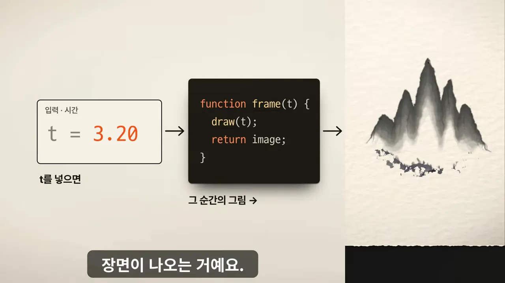
같은 t에는 언제나 같은 그림
지켜야 할 규칙은 하나예요. 같은 t를 넣으면 언제나 똑같은 그림이 나와야 해요. 그래서 이 코드에는 진짜 무작위 값이나 지금 시각을 넣지 않아요. 무작위가 필요하면 시드값을 정해 둔 난수를 써요. 화면의 rand(7)은 1회째와 2회째 모두 0.01 0.06 …으로 같은 순서를 뽑아요.
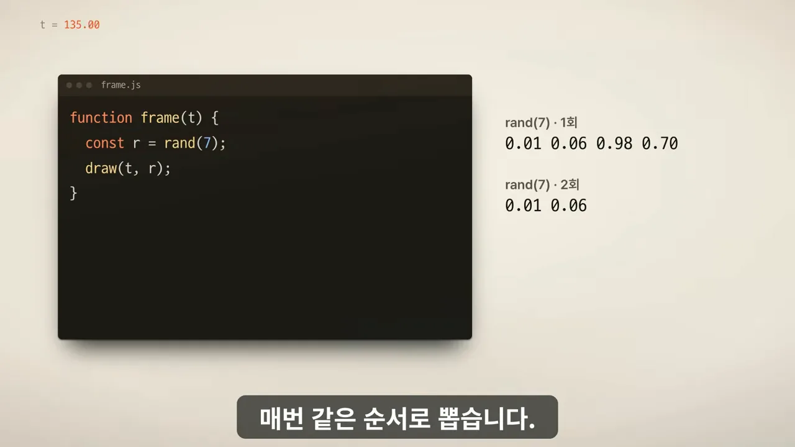
앞 순간이 다음 순간을 정하는 움직임은 다르게 다뤄요. 쏟아지는 구슬이나 바람에 날리는 천은 실행할 때마다 진행이 달라질 수 있어요. 그래서 미리 끝까지 계산해 구워 두고, 재생할 때는 t에 맞는 결과를 꺼내 읽기만 해요.
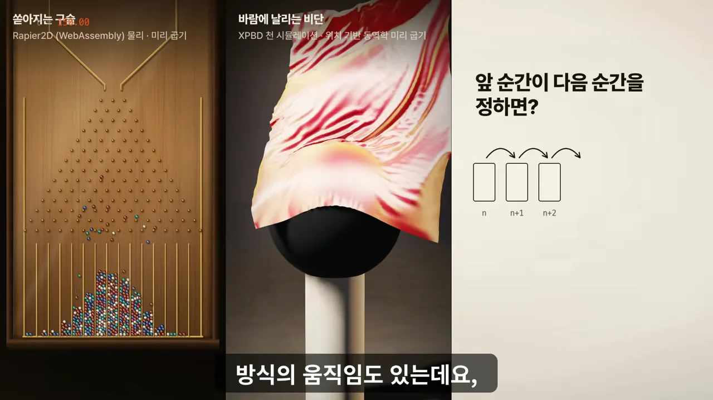
직접 돌려 보기: 같은 t, 같은 그림
아래는 영상의 예시 부탁('주황색 공이 바닥에서 튀어 오르는 짧은 영상')을 이 원리대로 짠 작은 장면이에요. 슬라이더가 t예요. 공 위치, 공이 눌리고 늘어나는 정도, 하늘의 별 위치가 모두 t 하나로 정해져요.
프레임 번호(30fps 기준) 0
공의 가로 × 세로 1.00
멈추는 시각 3.00초
다시 그린 결과 같아요
가정: 튈 때마다 다음 높이는 1/4, 체공 시간은 절반으로 줄어요. 영상이 준 숫자가 아니라 이 장면용으로 정한 값이에요.
- 슬라이더를 앞뒤로 아무렇게나 움직였다가 같은 t로 돌아와 보세요. 공과 별이 늘 같은 자리에 있어요. 어디로 건너뛰어도 그 순간 장면이 그대로 나오는 이유예요.
- '진짜 무작위 쓰기'를 켜고 '같은 t로 다시 그리기'를 눌러 보세요. t는 그대로인데 별이 매번 다른 데 찍혀요. 이렇게 짜면 녹화할 때마다 결과가 달라져요.
- t를 1.00, 2.00, 2.50처럼 공이 바닥에 닿는 순간에 두어 보세요. 공이 납작해져도 가로 × 세로는 1.00이에요. 7절의 스쿼시 앤드 스트레치 규칙이에요.
- 튈 때마다 같은 비율로 줄어드니, 공이 멈추는 시각을 계산으로 미리 알아요. 8절의 '다 같이, 멈춰'가 쓰는 닫힌식 물리가 이 방식이에요.
붓은 네 가지, 원리는 하나
그림을 그리는 붓도 브라우저 안에 여러 개 들어 있어요. 화면 아래 이름표대로 글자와 상자는 HTML(HyperText Markup Language)·CSS(Cascading Style Sheets), 선과 도형은 SVG(Scalable Vector Graphics), 점을 직접 찍을 땐 Canvas, 픽셀마다 계산할 땐 WebGL이에요. 마지막 WebGL은 그래픽 카드로 계산해요.
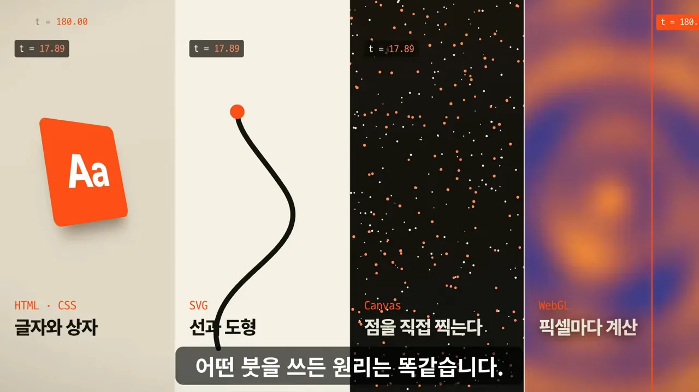
코드로 어디까지 만들 수 있을까
영상은 이 원리로 만든 작품들을 먼저 보여 줘요. 물에 풀리는 잉크, 흐느적거리는 해파리, 젤리처럼 출렁이는 글자, 두껍게 바른 유화, 붓글씨, 목판화, 3D 섬 위를 나는 카메라, 만화처럼 칠한 비 오는 정류장, 광고의 로고 등장, 방송 자막까지 모두 코드예요. 이미지 파일은 하나도 쓰지 않았어요. 아래 세 칸은 물속에 퍼지는 잉크, 유리 해파리, 점균이 쓴 글자예요.
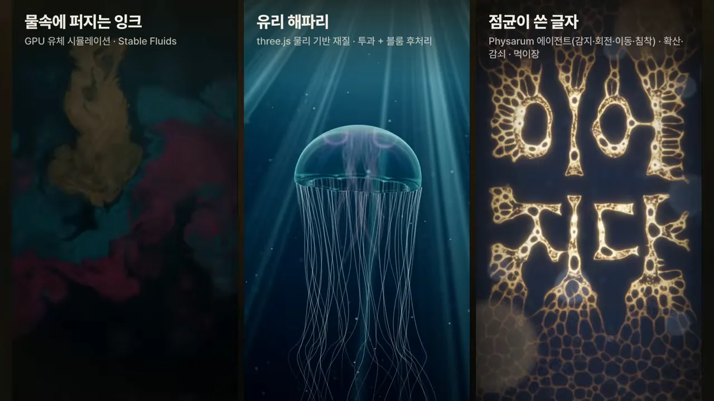
세 작품의 속
물속에 퍼지는 잉크는 실제 유체 계산이에요. 화면을 작은 칸으로 나누고 칸마다 물의 속도를 담아요. 화면 아래 주황 단추 세 개, 힘 더하기 → 압력 맞추기 → 흐름 따라 옮기기를 매 순간 되풀이해요. 가운데 점 격자의 색 점들이 칸마다 담긴 속도예요.
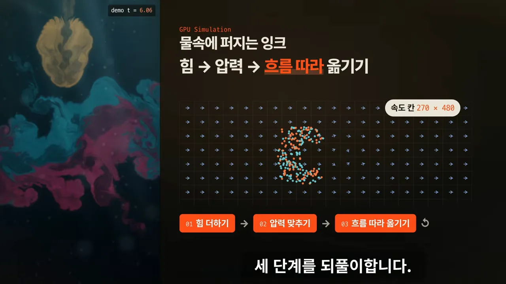
종이 인형극은 일부러 뚝뚝 끊기게 움직여요. 스톱모션처럼 시간을 1초에 12번만 바뀌게 잘라 한 동작을 두세 프레임 붙잡아요. 화면의 계단 선이 step = floor(t × 12)로 자른 시간이에요. 가장자리는 가위로 오린 것처럼 짧은 직선으로 끊고, 동작마다 위치를 조금씩 어긋나게 해 손으로 놓은 느낌을 내요.
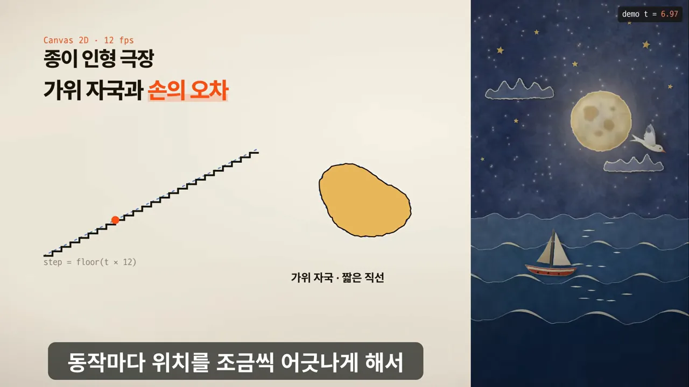
새벽 호숫가는 사진 한 장이에요. 깊이 지도를 한 장 더 두고 가까운 것은 많이, 먼 것은 조금 움직이는 2.5D 사진 시차를 썼어요. 끝에는 카메라는 뒤로 물러나고 렌즈는 당기는 돌리 줌을 써서, 화면 오른쪽 아래 숫자처럼 배는 ×1.00 그대로인데 뒤의 산이 다가와요.
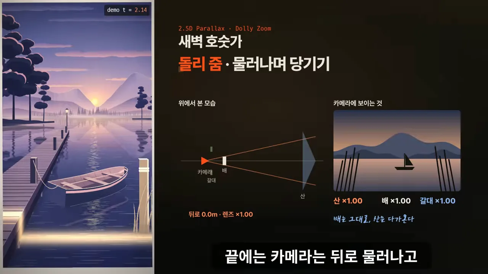
속은 이렇게 복잡하지만 이 원리를 다 알아야 만들 수 있는 건 아니에요. 코드는 에이전트가 짜요.
직접 만들어 보기: 말로 부탁하고 한 장씩 렌더
준비물은 생각보다 단순해요. Claude Code 같은 코딩 에이전트 하나와 결과를 틀어 볼 웹 브라우저만 있으면 돼요. 에이전트는 코드를 대신 짜고, 브라우저는 코드를 그림으로 그려요.
말로 부탁하면 HTML 파일 하나
만들고 싶은 장면을 말로 설명해요. 화면 왼쪽 에이전트 창의 첫 부탁은 '주황색 공이 바닥에서 세 번 튀어 오르는 5초짜리 영상을 HTML로 만들어 줘'예요. 에이전트는 index.html에 장면 코드를 쓰고, 브라우저로 열면 바로 재생돼요. 마음에 안 드는 곳은 다시 말로 고쳐 달라고 해요. 두 번째 부탁 '공을 파랗게, 그리고 더 무겁게 튀게 해 줘'에 공이 파랗게 바뀌었어요.
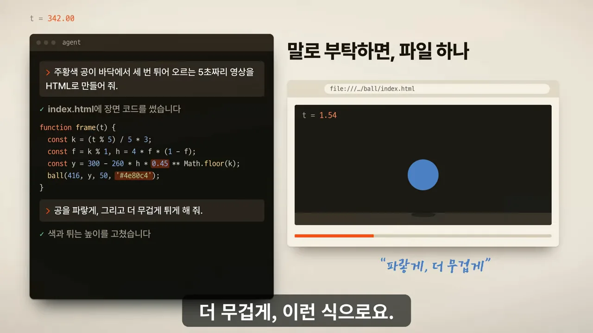
모든 움직임은 타임라인 하나에
에이전트가 쓰는 장면 코드에는 정해진 뼈대가 있어요. 모든 움직임을 타임라인이라는 시간표 하나에 올려 둬요. 화면 오른쪽 코드 tl.from('.ball', …), tl.to('.title', …)가 몇 초에 무엇이 얼마 동안 움직일지 적은 줄이고, 아래 색 막대가 그걸 시간축에 펼친 모습이에요. 재생기는 지금 시각 t만 알려 줘요(player.seek(t)).
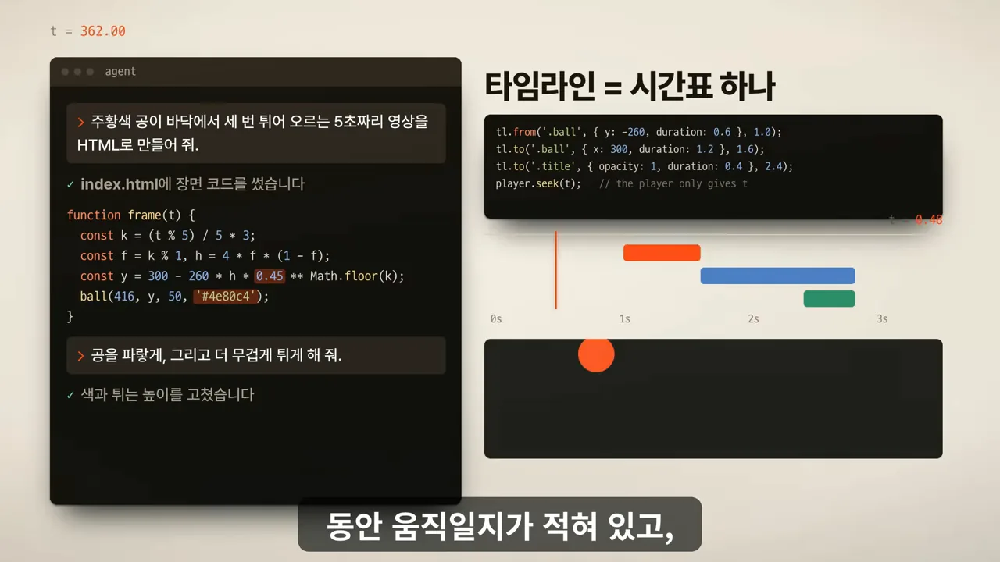
내레이션은 문장 길이로 시간표를 짜요
내레이션을 넣고 싶으면 대본만 건네요. 화면에서는 '이 대본에 맞춰 내레이션도 넣어 줘'와 함께 script.txt · 314문장을 줬어요. 에이전트는 대본을 문장마다 나눠(화면의 op01, op02 …) 음성을 만들고 길이를 재요. 그 길이가 그대로 영상의 시간표가 돼요.
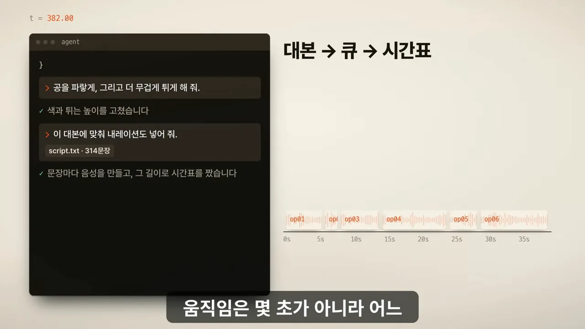
단어가 몇 초에 나오는지까지 재 둬요. 그래서 음성 파형에서 '파랗게'가 시작하는 지점에 맞춰 공의 색을 바꿀 수 있어요. 화면 아래 cue(id).when(word)가 그 단어 시각을 꺼내는 부분이에요. 에이전트는 직접 브라우저로 장면을 찍어 보며 어긋난 곳도 고쳐요.
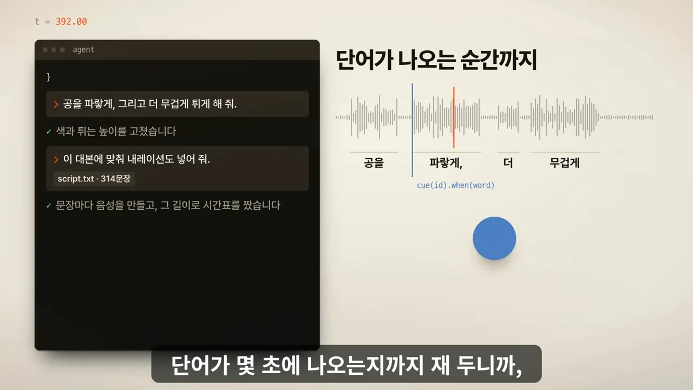
녹화 대신 한 장씩
다 됐으면 영상 파일로 만들어요. 화면을 그대로 녹화하면 컴퓨터가 버거운 장면에서 프레임이 빠져요. 화면 위 막대의 빗금 칸이 그 '빠진 프레임'이에요. 그래서 시계를 한 칸씩 옮겨 가며 한 장씩 그리고, 다 그려지면 찍어서 이어 붙여요. 아래 막대에는 빠진 칸이 없어요.
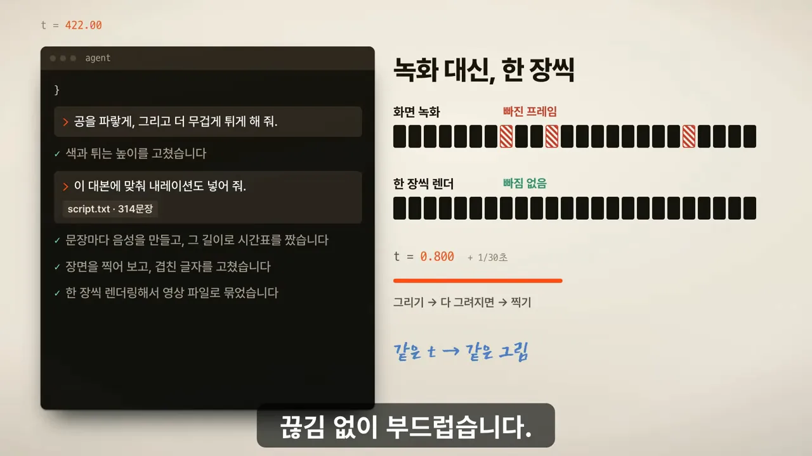
flowchart LR A["말로 장면 부탁"] --> B["에이전트가 HTML에
장면 코드 작성"] B --> C["브라우저로 재생하고
프레임 찍어 확인"] C -->|"고칠 곳을 말로"| B C --> D["대본이 있으면
문장 길이로 시간표"] D --> E["t를 한 칸씩 옮기며
한 장씩 렌더"] E --> F["이어 붙여 영상 파일"]
aimotion 스킬로 기법 가져다 쓰기
표현할 수 있는 기법은 끝이 없어요. 발표자는 그중 영상 콘텐츠를 만들며 자주 쓸 효과를 골라 스킬로 정리했어요. 스킬 이름은 aimotion이에요. 카드에 적힌 구성은 스킬 안내 SKILL.md, 기법 목록 INDEX.md, 기법마다 데모 하나씩 담은 demos/, 찾기 스크립트 scripts/aimotion.mjs예요.
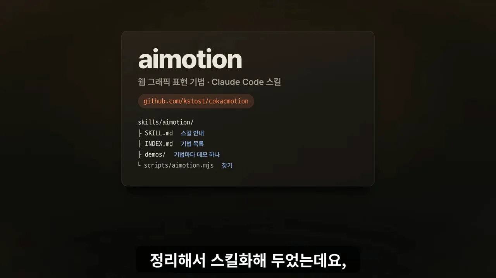
데모는 설치 없이 웹페이지에서 바로 볼 수 있어요. 그림을 누르면 데모가 브라우저에서 재생되는데, 영상 파일이 아니라 코드가 지금 그리는 화면이에요. 화면 왼쪽 목록에서 73-anime-stagger/ 폴더를 열면 구현 노트 NOTES.md, 소스 main.js, 장면 그림 out/poster.jpg가 함께 들어 있어요. 오른쪽은 그 데모가 재생되는 모습이에요.
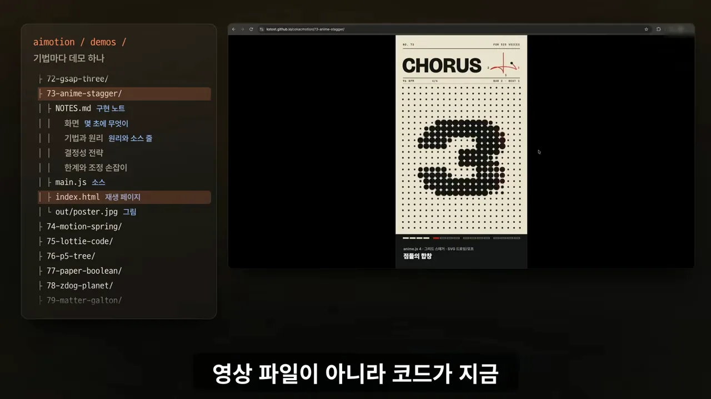
설치와 쓰는 법
쓰는 법은 간단해요. 원하는 스타일의 데모를 짚기만 하면 그걸 레퍼런스 삼아 만들어 달라고 할 수 있어요. 깃허브 저장소에 Claude Code 플러그인 형태로 올려 둬서 명령 두 줄로 설치해요.
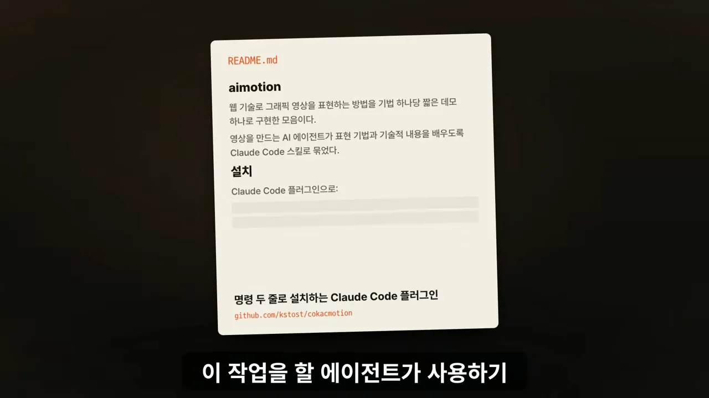
claude plugin marketplace add kstost/cokacmotion
claude plugin install aimotion@aimotion- 빈 폴더를 하나 만들고 그 안에서 Claude Code를 실행해요
- 저장소 주소와 함께 만들고 싶은 장면을 적어요 — 예: 'github.com/kstost/cokacmotion 저장소를 참고해서, 물속에 잉크가 번지듯 나타나는 제목 애니메이션을 만들어 줘.'
- 결과를 보며 한 마디씩 고쳐 달라고 해요 — 예: '잉크가 조금 더 천천히 퍼지게 해 줘.' 에이전트가 그 부분만 고치고 다시 프레임을 찍어 확인해요
잉크 제목을 만드는 과정
에이전트는 저장소를 받아 스킬 안내부터 읽고 잉크와 유체를 다룬 데모를 찾아요. 화면 오른쪽 '참고한 데모'가 12 · 물속에 퍼지는 잉크(GPU(Graphics Processing Unit) 유체 시뮬레이션 · Stable Fluids)예요. 그 노트와 소스 코드와 그림을 읽은 뒤, GPU 유체 시뮬레이션으로 이 제목만을 위한 장면을 새로 짜요.
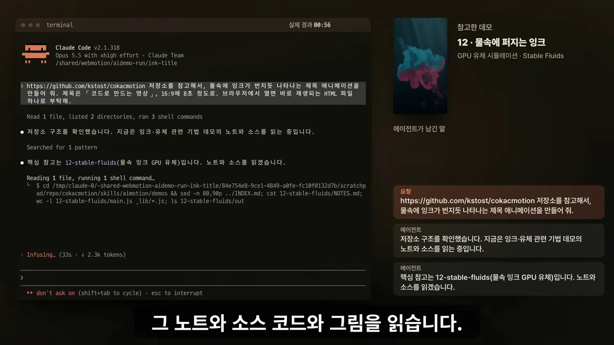
다 짠 다음에는 직접 프레임을 찍어 확인해요. 처음에는 화면이 전부 까맣게 나왔는데 스스로 원인을 찾아 고쳤어요. 잉크가 너무 많아 제목이 묻히자 양과 흐름을 여러 번 고쳐 가며 다시 봤어요. 끝으로 같은 시각에 같은 그림이 나오는지까지 점검하고 HTML 파일 하나로 넘겨줘요. 오른쪽 위가 그렇게 나온 '코드로 만드는 영상' 제목이고, 그 아래 카드들이 에이전트가 단계마다 남긴 말이에요.
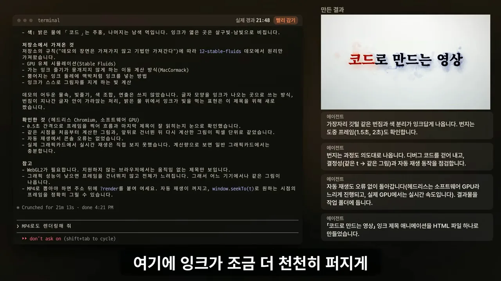
데모를 바꿔 두 장면 더
이번에는 종이 인형극 데모(24 · 종이 인형극, Canvas 2D · 12fps 스톱모션)를 참고해 '오려 붙인 종이 꽃밭에서 꽃이 하나씩 피어나고 벌 한 마리가 날아드는 장면'을 부탁했어요. 왼쪽이 참고한 데모, 오른쪽이 만든 결과예요. 오려 붙인 꽃들이 인형극처럼 뚝뚝 끊기며 피고, 벌은 해바라기에 내려앉아요.
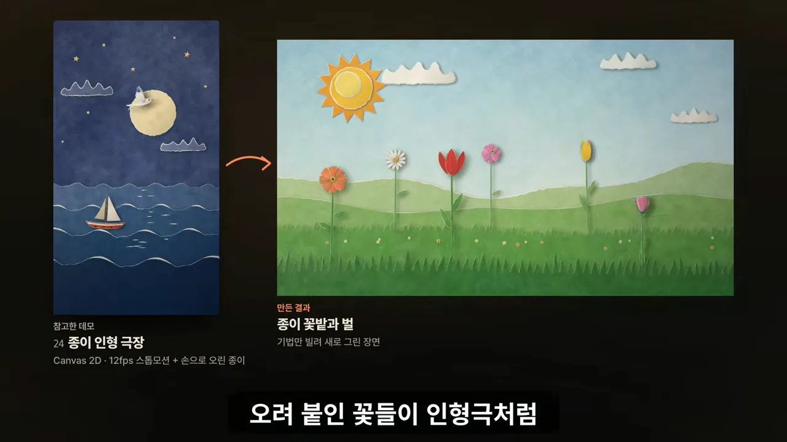
마지막으로 사진 시차 데모(132 · 새벽 호숫가)를 참고해 '사진 한 장처럼 그린 저녁 골목 안으로 카메라가 천천히 걸어 들어가는 장면'을 만들었어요. 그림은 한 장뿐인데 가까운 담장은 크게 지나가고 먼 계단은 천천히 다가와요. 화면 위 카드 두 장이 이 절의 요약이에요. 왼쪽은 설치 명령, 오른쪽은 '만들고 싶은 장면을 말로 · 참고할 곳'이에요.
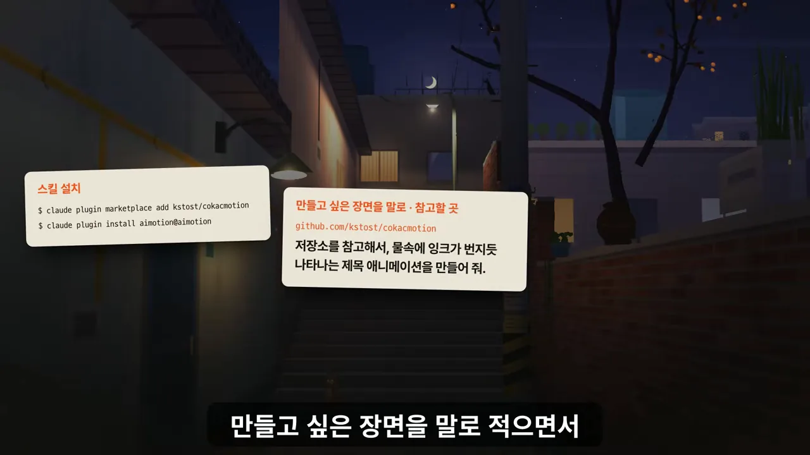
무엇이 좋고 무엇이 어려울까
발표자는 지금 보는 이 영상도 이렇게 만들었다고 해요. 대본을 건네고 장면을 보면서 고칠 곳을 말로 알려 줬을 뿐, 코드를 짜고 고치고 확인한 건 에이전트예요. 그 경험으로 정리한 장단점이에요.
| 좋은 점 | 어려운 점 |
|---|---|
| 글자가 진짜 글자라 4K로 키워도 선명해요 | 브라우저에서 바로 볼 땐 매 프레임을 실시간으로 그려야 해서 무거운 장면은 미리 굽거나 해상도를 낮춰요 |
| 대본이 바뀌면 시간표만 다시 뽑아요 | 그래픽 카드를 많이 쓰는 데모는 한꺼번에 띄울 수 없어 나올 차례에 준비하고 지나가면 내려놓아요 |
| 몇 번을 다시 만들어도 같은 결과가 나와요 | 에이전트도 처음부터 원하는 그림을 내지 못해 보고, 말하고, 다시 보는 왕복을 몇 번은 거쳐요 |
| 무엇을 고쳤는지 줄 단위로 비교하고 언제든 되돌려요. 영상을 문서처럼 다뤄요 |
실시간으로 그리기가 왜 어려운지는 아래 막대그래프가 보여 줘요. 60fps면 한 프레임에 16.7ms 안에 그려야 하는데, 가운데 빨간 막대들은 그 선을 훌쩍 넘었어요. 녹화하면 이 구간에서 프레임이 빠져요.
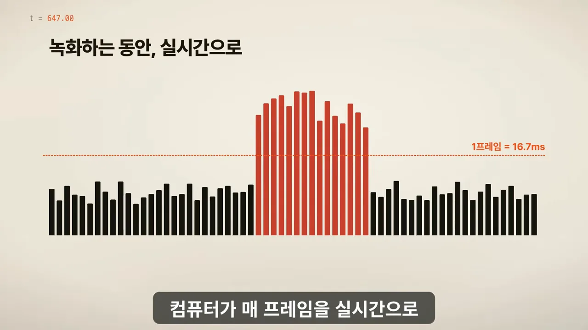
영상에 나온 데모와 폴더 이름
4절부터는 앞에서 스쳐 간 작품들을 하나씩 열어 봐요. 모두 스킬 안에 데모로 들어 있어서, 마음에 드는 기법이 보이면 그 데모를 에이전트에게 레퍼런스로 짚어 주면 돼요. 영상 화면 위쪽에 찍힌 폴더 경로를 모아 두었어요.
| 작품 | 기법 | 폴더 | 절 |
|---|---|---|---|
| 물속에 퍼지는 잉크 | GPU 유체 시뮬레이션 | 12-stable-fluids | 1·3절 |
| 종이 인형극 | 12fps 스톱모션 | 24-paper-stopmotion | 1·3절 |
| 새벽 호숫가 | 2.5D 사진 시차 · 돌리 줌 | 132-photo-parallax | 1·3절 |
| 먹 한 방울 | SVG 필터 | 01-svg-ink | 4절 |
| 자라는 산호 | 스페이스 콜로니제이션 | 03-coral-growth | 4절 |
| 흐르는 성운 | FBM(Fractional Brownian Motion) · 도메인 워핑 | 05-fbm-nebula | 4절 |
| 유리 해파리 | three.js PBR(Physically Based Rendering) 유리 | 13-glass-jellyfish | 4절 |
| 말랑한 글자 | XPBD(Extended Position Based Dynamics) | 60-jelly-type | 5절 |
| 물풍선이 멈춘 순간 | 타임 리매핑 | 166-bullet-time | 5절 |
| 두껍게 바른 유화 | 붓질 렌더링 · 높이 맵 조명 | 19-impasto | 5절 |
| 목판화 한 장 | 거리 변환 | 20-woodcut | 5절 |
| 붓으로 쓴 한 글자 | 붓 물리 모델 | 42-calligraphy | 5절 |
| 점균이 쓴 글자 | Physarum 에이전트 | 65-physarum-type | 6절 |
| 줄무늬 너머의 글자 | 배리어 그리드 애니메이션 | 144-scanimation | 6절 |
| 여백에 남긴 비법 | 최소 저크 곡선 | 101-marker-annotate | 6절 |
| 택배 왔다 | 글꼴 외곽선 | 105-comic-sfx | 6절 |
| 카메라 안무 | GSAP(GreenSock Animation Platform) 트윈 | 72-gsap-three | 7절 |
| 점들의 합창 | anime.js 스태거 | 73-anime-stagger | 7절 |
| 네모, 무게를 싣다 | 스쿼시 앤드 스트레치 | 124-shape-mascot | 7절 |
| 성냥 하나의 방 | 노멀 맵 조명 | 162-relight | 7절 |
| 숫자가 움직일 때 | D3 객체 항등성 | 32-dataviz-motion | 7절 |
| 태엽 장치 | SVG SMIL(Synchronized Multimedia Integration Language) | 84-svg-smil | 7절 |
| 동틀녘 러닝 클럽 | 경로 애니메이션 + 마스크 | 116-logo-reveal | 7절 |
| 점 하나로 여는 무대 | 부호 거리장 | 118-dot-matrix | 7절 |
| 목마르기 전에 | CSS 3D 투영 | 122-app-promo | 7절 |
| 모퉁이 라이브 | 디자인 토큰 · clip-path | 123-lower-thirds | 7절 |
| 오늘 저녁 뭐 먹지 | 말풍선 크기 계산 | 135-chat-thread | 7절 |
| 비 오는 정류장 | 툰 셰이딩 | 149-toon-shading | 7절 |
| 세 번 찍는 도장 | 임팩트 키트 · 히트 스톱 | 89-impact-kit | 8절 |
| 다 같이, 멈춰 | 닫힌식 물리 | 95-closed-form-physics | 8절 |
| 눈 위의 박자 | 보행 주기 | 91-gait-cycle | 8절 |
| 구름 위의 아침 | HUD(Head-Up Display) 계기판 | 90-measure-hud | 8절 |
| 책방 고양이는 어디에 | 시선 유도 · 피사계 심도 | 131-spotlight-focus | 8절 |
| 창밖의 하루 | 타임랩스 · 장노출 | 160-time-lapse | 8절 |
| 오늘은 그냥, 한 번 | 키네틱 타이포그래피 | 96-kinetic-camera | 9절 |
| 쌓으면, 꿈 | 복셀 글자 · 헝가리안 알고리즘 | 102-iso-blocks | 9절 |
| 오늘의 빈칸 | 단어 교체 키트 | 103-word-swap | 9절 |
| 오늘이라는 터널 | 원통 좌표 | 104-type-tunnel | 9절 |
| 보내기 전에 | 두벌식 오토마타 | 106-ime-compose | 9절 |
| 접힌 쪽지 | 순운동학 | 109-paper-unfold | 9절 |
| 취급주의, 오늘의 주인공 | 무한 마퀴 | 115-marquee-tape | 9절 |
| 라면 물 조절 실패 | 겹 테두리 · 용수철 튀어나오기 | 138-variety-captions | 9절 |
글자·도형과 픽셀 계산, 3D
이제 앞에서 스쳐 간 작품들의 속을 하나씩 열어요. 먼저 글자와 도형을 다루는 붓(SVG, Canvas)과 픽셀마다 계산하는 붓(셰이더), 그리고 3D예요.
먹 한 방울 — SVG 필터
먹이 번지는 모습은 SVG 필터로 만들었어요. SVG 필터는 효과를 거는 작은 단계들을 차례로 이어 붙인 파이프라인이에요. 포토샵 필터를 순서대로 쌓는 것과 비슷해요. 화면의 네 칸이 그 순서예요. 도형(<circle>) → 노이즈(feTurbulence) → 노이즈만큼 가장자리 밀어내기(feDisplacementMap) → 흐리기로 번지게(feGaussianBlur).
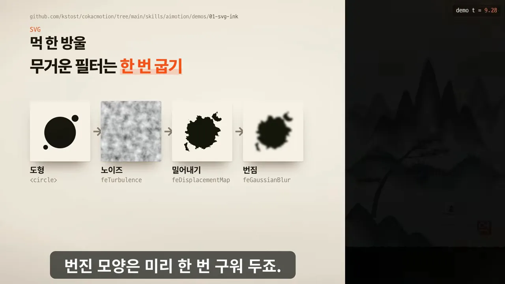
자라는 산호 — 스페이스 콜로니제이션
산호는 Canvas에 선을 그어 그렸어요. 자라는 방식은 스페이스 콜로니제이션이라는 알고리즘이에요. 화면 가운데처럼 산호가 차지할 자리에 파란 점(먹이점)을 수천 개 뿌려 두고, 각 점이 가장 가까운 가지를 끌어당기게 해요. 끌려간 가지는 그 방향으로 한 걸음씩 자라요. 이걸 반복하면 왼쪽 같은 그물 모양이 나와요.
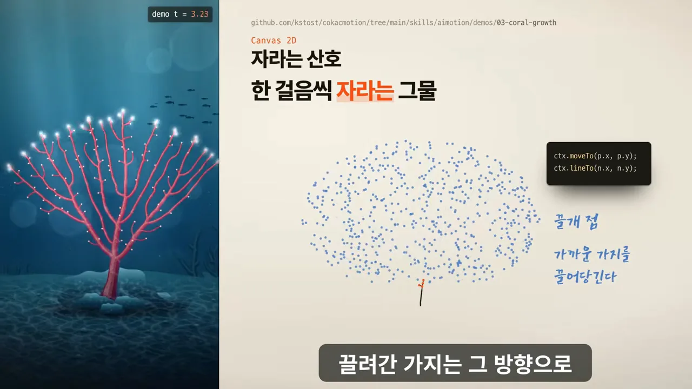
흐르는 성운 — 노이즈를 겹치고 휘기
흐르는 성운에는 그림 파일이 하나도 없어요. 화면의 모든 픽셀을 셰이더 하나가 계산해요. 이 작은 프로그램을 프래그먼트 셰이더라고 불러요. 바탕은 노이즈예요. 화면 아래 세 칸이 순서예요. 노이즈 1겹 → 크기가 다른 노이즈 6겹을 겹친 FBM(구름 같은 무늬) → 노이즈로 좌표 자체를 한 번 더 휜 도메인 워핑(보라 소용돌이)이에요.
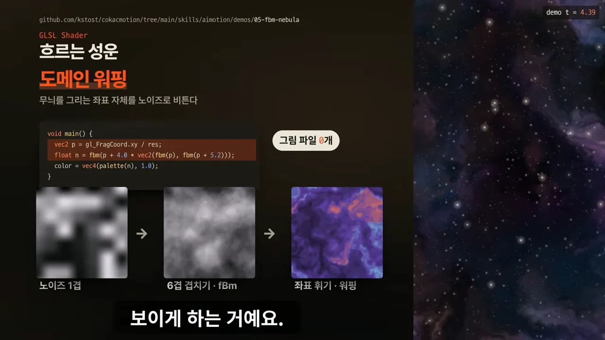
유리 해파리 — three.js 물리 기반 재질
유리 해파리는 three.js로 만들었어요. three.js는 웹에서 3D를 그리는 WebGL을 쉽게 쓰게 해 주는 라이브러리예요. 카메라와 빛, 재질을 객체로 다뤄요. 갓은 빛이 통과하며 꺾이는 유리 재질이라 안쪽에서 빛나는 기관이 일그러져 보여요. 화면 코드의 transmission: 1(빛이 얼마나 통과할지)과 ior: 1.36(얼마나 꺾일지)이 그 숫자예요.
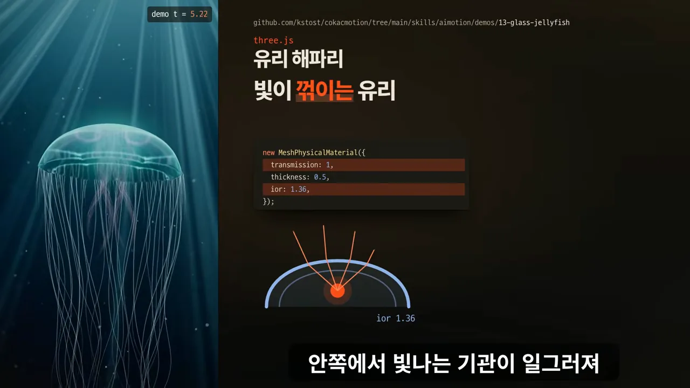
촉수는 조금 전의 갓 움직임을 따라가게만 했어요. 끝으로 갈수록 더 오래전 움직임을 따라가니까 박동이 파도처럼 촉수를 타고 내려가요. 촉수 물리를 따로 계산하지 않고 '시간 차'만으로 낸 움직임이에요.
움직임과 재료의 질감
이번에는 움직임과 연출, 그리고 붓·종이·물감처럼 손으로 만지는 재료의 질감이에요. 물리 계산이 많지만 공통점이 있어요. 무거운 계산은 미리 돌려 두고, 재생할 때는 t에 맞는 결과만 꺼내요.
말랑한 글자 — XPBD
말랑한 글자는 글꼴의 외곽선에서 시작해요. 쓰인 기술은 XPBD예요. 힘을 계산하는 대신, 점들이 지켜야 할 규칙에 맞게 위치를 직접 고쳐 나가는 물리 계산이에요. 외곽선과 안쪽에 점을 촘촘히 찍고 삼각형으로 이어 그물을 만들어요. 화면의 '말' 글자 속 점무늬가 그 그물이에요.
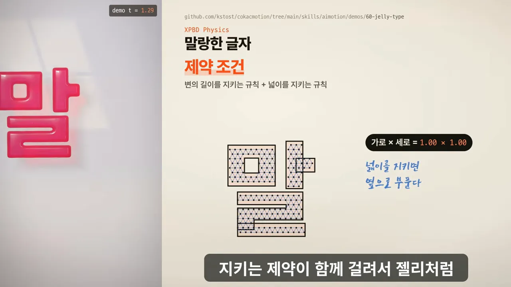
이 물리 계산도 미리 끝까지 돌려 점의 위치를 전부 저장해 두고, 재생할 때 t에 맞는 장면을 꺼내 그려요. 구슬을 고무줄로 엮은 그물을 먼저 떨어뜨린 뒤 늘어난 줄만 제 길이로 되돌리는 셈이에요.
물풍선이 멈춘 순간 — 타임 리매핑
물풍선이 터지는 순간 시간이 멈추고 카메라만 돌아가요. 비밀은 시계가 두 개라는 거예요. 카메라는 영상 시간을, 물과 풍선은 따로 흐르는 장면 시간을 따라가요. 화면 아래 두 칸이 그 두 시계예요. 카메라 시간 t = 0.08일 때 장면 시간은 τ = 0.0820이에요.
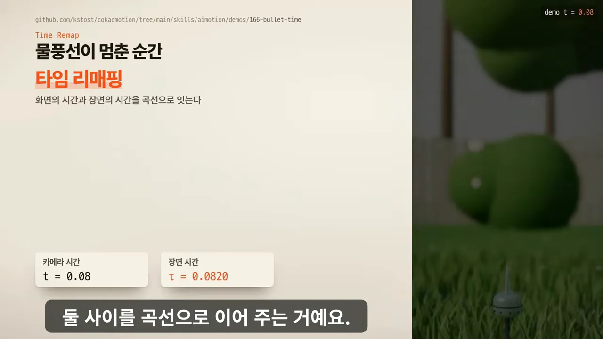
두껍게 바른 유화 — 붓질 9,300번
두껍게 바른 유화는 붓질 9,300번을 하나하나 계산해 그려요. 사진처럼 칠하는 대신 붓질 하나하나를 도형으로 만들어 쌓는 회화풍 렌더링이에요. 화면의 파랑·노랑 곡선처럼 붓은 그림 속 흐름을 따라 길게 이어지다 색이 크게 바뀌는 곳에서 멈춰요.
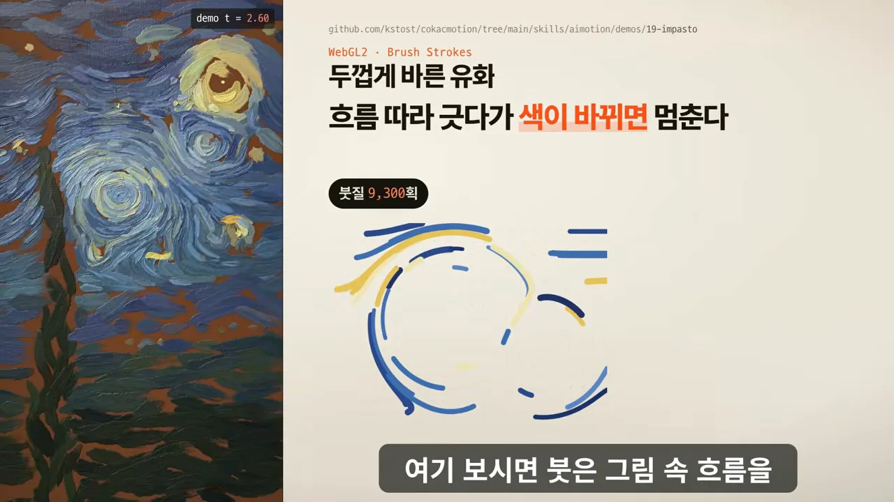
목판화 — 거리 변환
목판화는 나무를 깎는 일부터 코드로 해요. 칼선의 바탕은 거리 변환이에요. 모양 안의 모든 점에 가장자리까지의 거리를 적어 두고, 그 등고선을 따라 칼선을 내요. 화면 왼쪽 동심원 무늬가 그 등고선이고, 어두운 곳일수록 선을 굵게 남겨요.
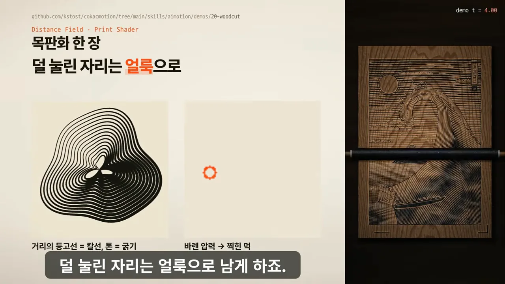
붓으로 쓴 한 글자 — 붓 물리 모델
붓으로 쓴 '길' 자는 붓털 96가닥을 따로따로 움직여요. 붓을 털 하나하나로 나누고 털마다 먹의 양과 닿는 자리를 따로 계산하는 방식이에요. 털마다 머금은 먹의 양이 정해져 있어서, 빠르게 그은 획일수록 먹이 먼저 말라 갈라져요. 서예에서는 먹이 모자라 획 사이가 하얗게 갈라지는 것을 비백이라고 불러요.
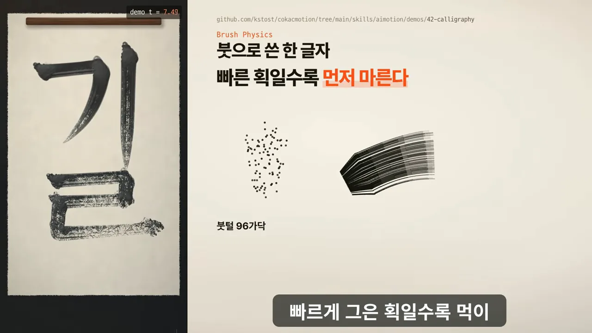
글자가 연기하는 작품들
이번에는 글자가 주인공인 작품들이에요. 같은 글자라도 무엇이 그리느냐(점균, 착시, 손, 소리)에 따라 기법이 완전히 달라요.
점균이 쓴 글자 — Physarum 에이전트 모델
점 33만 개가 스스로 길을 찾아 글자를 그려요. 모델 이름은 황색 점균의 학명(Physarum)에서 따왔어요. 수많은 단순한 개체가 규칙만으로 길을 만들어 내는 방식이에요. 화면 가운데 그림이 점 하나의 규칙이에요. 앞과 양옆 세 방향의 냄새를 맡고(감지), 진한 쪽으로 방향을 틀고(회전), 지나간 자리에 흔적을 남겨요.
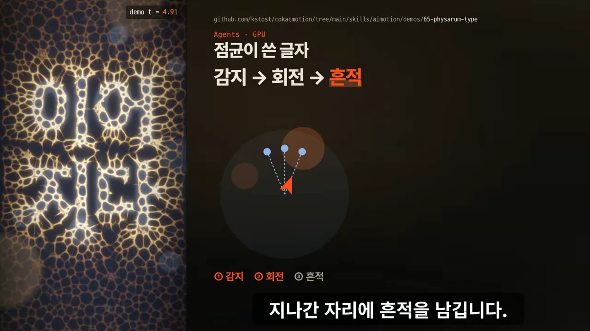
줄무늬 너머의 글자 — 스캐니메이션
스캐니메이션이라는 오래된 착시예요. 기술 이름은 배리어 그리드 애니메이션이에요. 그림 여섯 장을 세로 줄로 잘라 한 장에 번갈아 섞어 두고, 그 위에 틈이 난 줄무늬 필름을 덮어요. 화면 가운데 '필름 · 틈 1칸, 막대 5칸'이 그 필름이에요.
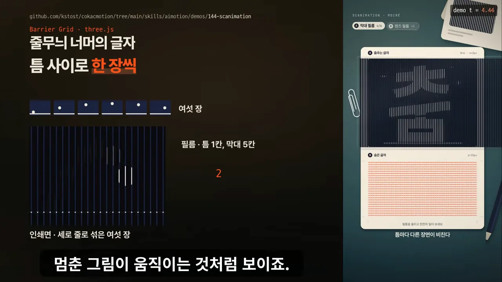
형광펜과 손 주석 — 최소 저크 곡선
사람이 긋는 손의 속도를 흉내 내요. 사람 손 움직임 연구에서 나온 최소 저크 곡선을 썼어요. 손이 가장 매끄럽게 움직일 때의 속도 변화예요. 화면 아래 그래프가 그 모양이에요. 위치(검은 곡선)는 천천히 출발해 가운데서 빠르고 끝에서 느려지고, 속도(빨간 점선)는 가운데가 볼록해요.
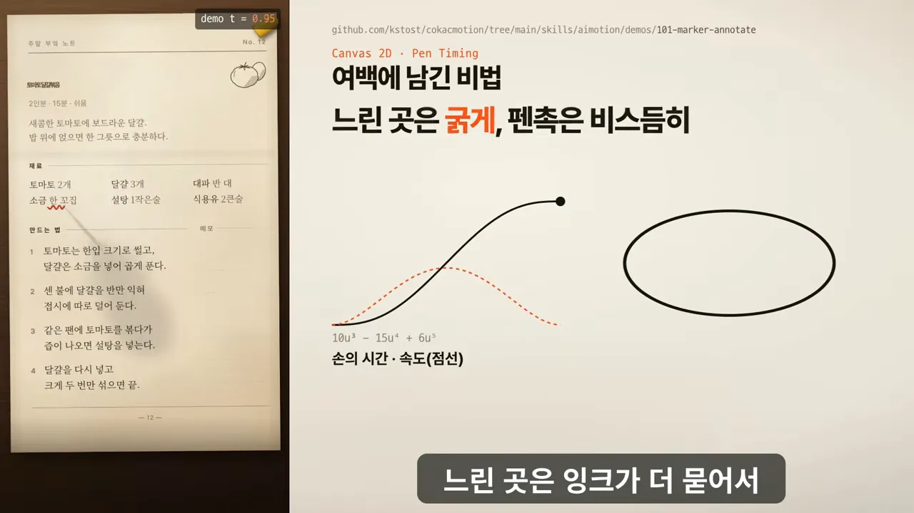
만화 의성어 — 글꼴 외곽선
'택배 왔다'는 같은 글꼴을 소리마다 다르게 깎아요. 글자 모양은 글꼴 파일에서 꺼낸 벡터 외곽선이에요. 점과 곡선으로 된 윤곽이라 점을 옮기고 다듬어 모양을 바꿀 수 있어요. 화면처럼 '띵'은 모서리를 둥글게, '콰'는 칼로 깎은 듯 각지게, '부'는 외곽선이 떨리게 바꿔요.
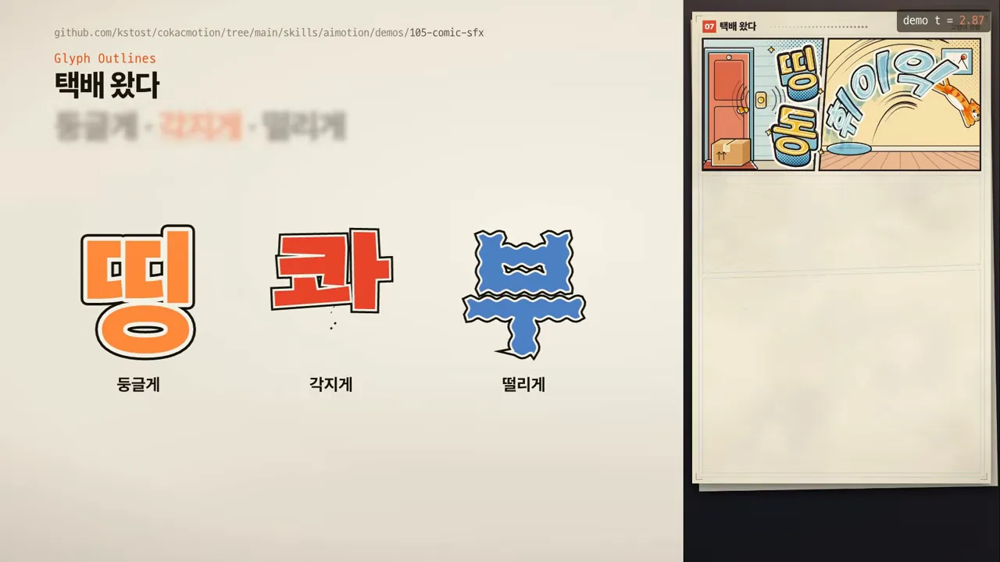
고양이도 그림 파일 없이 코드로 그렸어요. 몸통과 머리는 타원, 다리는 둥근 막대, 꼬리는 끝으로 갈수록 가늘어지는 관이에요. 화면 아래 세 단계 ① 먹선 ② 종이로 메우기 ③ 어긋난 색판 순서로 칠해요.
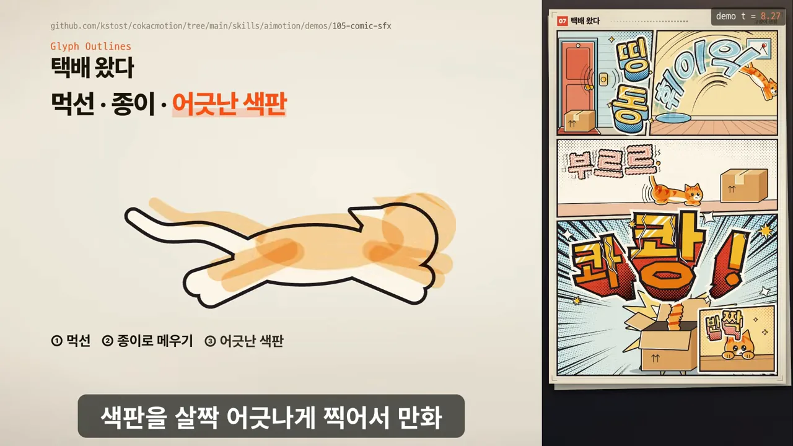
애니메이션 도구와 광고 모션그래픽
이번에는 애니메이션 라이브러리와 연출 원칙, 그리고 광고·앱 소개·방송에서 자주 보는 모션그래픽이에요. 라이브러리를 쓰더라도 결국 '시각을 넣으면 그 순간의 모습'이라는 틀은 같아요.
카메라 안무 — GSAP 트윈
3D 섬 장면 전체를 GSAP 타임라인 하나로 움직여요. GSAP은 시간에 따라 숫자를 부드럽게 바꿔 주는 애니메이션 라이브러리이고, 이렇게 숫자를 바꾸는 걸 트윈이라고 불러요. 카메라를 방향·높이·거리 숫자 몇 개(화면 아래 az 150° el 46° dist 5.2)로 정해 두고, 그 숫자를 움직이면 섬을 돌거나 다가가는 촬영이 돼요.
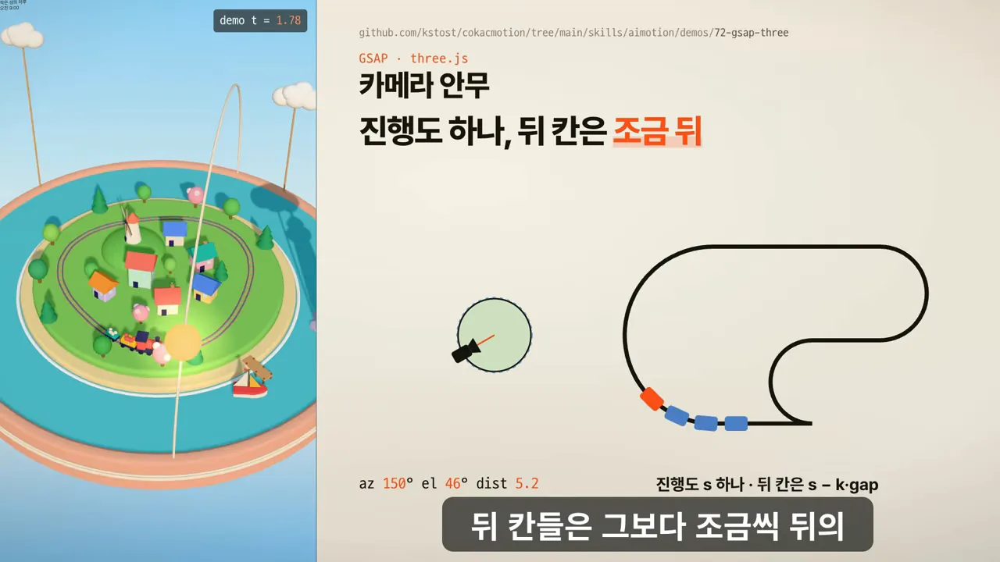
점들의 합창 — anime.js 스태거
anime.js는 GSAP과 비슷한 자바스크립트 애니메이션 라이브러리이고, 스태거는 여러 대상의 시작을 조금씩 엇갈리게 하는 기능이에요. 오른쪽 격자의 각 점은 출발점에서 떨어진 거리만큼 늦게 움직여요.
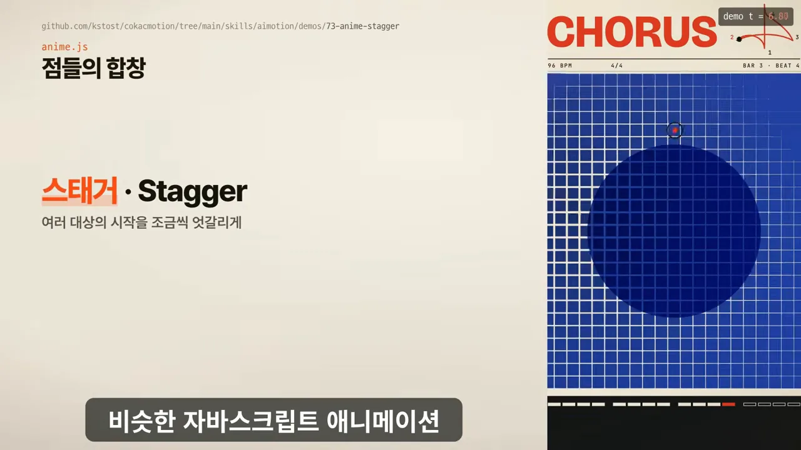
네모 마스코트 — 스쿼시 앤드 스트레치와 예비 동작
애니메이션의 오래된 원칙을 코드로 옮긴 작품이에요. 디즈니 애니메이터들이 정리한 12가지 원칙 가운데 두 가지, 스쿼시 앤드 스트레치와 예비 동작이에요. 뛰기 전에 웅크리고(예비 동작), 날아갈 때는 속도 방향으로 늘어나고, 착지할 때는 납작해져요.
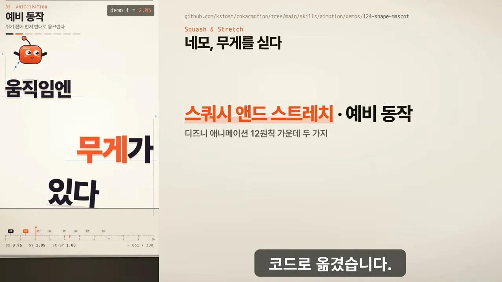
'성냥 하나의 방'은 평면 그림에 빛을 다시 비춰요. 노멀 맵 조명이라는 기법으로, 픽셀마다 면이 어느 쪽을 보는지 적은 지도를 만들고 그 지도로 빛을 계산해요. 그림 속 도형마다 높이를 만들고 높이의 기울기로 면의 방향을 구해요. 그래서 성냥불이 움직이면 평면 그림인데도 물건마다 그늘과 하이라이트가 따라 움직여요. 벽의 한 점에서 성냥불까지 걸어가다 무언가에 걸리면 그 점은 그늘이 돼요.
숫자가 움직일 때 — D3와 객체 항등성
데이터 시각화 라이브러리 D3로 만든 데이터 애니메이션이에요. 핵심은 객체 항등성이에요. 막대가 흐름 도표가 되고 지도 위 원이 되어도, 같은 항목은 끝까지 같은 물체로 이어지게 해요. 화면 왼쪽은 아시아 컨테이너 항만 물동량 막대(2014년), 오른쪽 그림은 막대 → 흐름 → 지도로 모양이 바뀌어도 '가, 나, 다'가 같은 물체라는 뜻이에요.
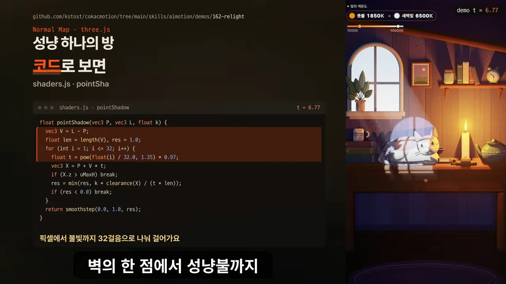
'태엽 장치'는 웹 브라우저에 원래 들어 있는 SVG 애니메이션 SMIL로 움직여요. SMIL은 그림 파일 안에 움직임을 적어 두는 방식인데, 원하는 시각으로 바로 옮겨 가는 setCurrentTime이라는 기능이 있어요. 그래서 매 프레임 그 시각만 알려 주면 톱니바퀴 아홉 개가 톱니 수에 맞춰 함께 째깍여요.
광고의 로고 등장 — 경로 애니메이션과 마스크
'동틀녘 러닝 클럽' 로고는 점들이 트랙을 돌며 고리를 그린 뒤에야 해가 떠오르게 짰어요. 이런 장면을 로고 리빌이라고 해요. 여기서 핵심은 경로 애니메이션과 마스크 두 가지예요. 오른쪽 그림처럼 점은 트랙 모양 경로를 따라 움직이고, 해는 마스크 뒤에서 올라와요.
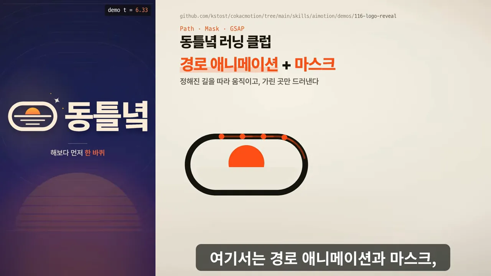
점 격자 화면 — 부호 거리장
점 격자 화면은 점 하나하나의 크기로 모양과 글자를 그려요. 거리를 재는 데는 부호 거리장(SDF(Signed Distance Field))을 써요. 모양 안쪽은 음수, 바깥은 양수로 가장자리까지의 거리를 돌려주는 함수예요. 화면 가운데 곡선(cover(d))처럼 거리에 따라 점 크기가 정해져서, 가장자리에 걸친 점은 중간 크기가 돼요. 오른쪽이 그렇게 그린 '온점' 포스터예요.
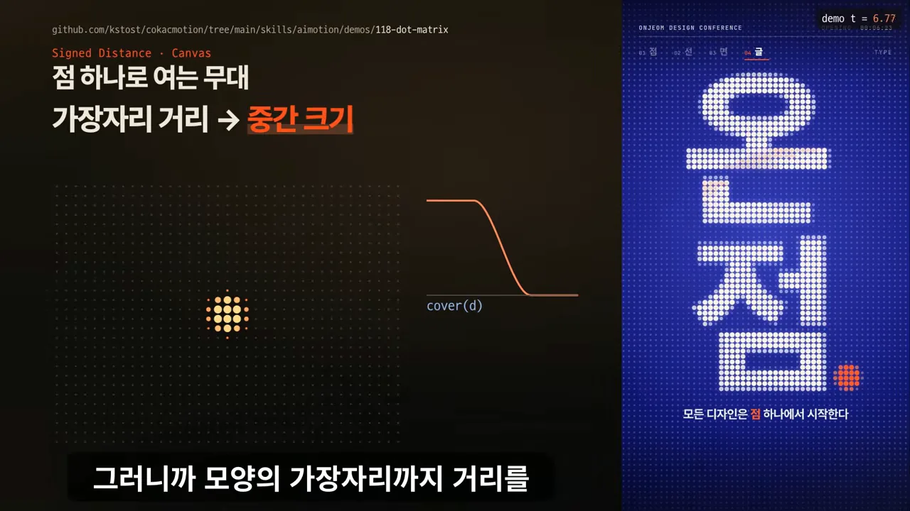
앱 소개 영상의 휴대폰은 CSS 3D로 판 12장을 겹쳐 만든 입체예요. 판을 깊이 방향으로 겹쳐 두면 브라우저가 원근을 계산하는데, 이걸 3D 투영이라고 해요. 터치와 화면 전환도 시간표 한 곳에서 읽어서 누르는 순간과 화면이 바뀌는 순간이 딱 맞아요. 눌린 카드가 그대로 부풀어 새 화면이 되니 눈이 길을 잃지 않아요.
방송 그래픽 패키지 — 디자인 토큰과 clip-path
방송 그래픽은 색과 글자 크기, 8픽셀 단위를 먼저 정한 디자인 시스템에서 출발해요. 이렇게 색과 크기·간격을 이름 붙은 값으로 정해 두는 걸 디자인 토큰이라고 불러요. 화면 가운데 '먹 #0d1730, 종이 #f7f3ea, 라임 #c8f04a, 8px'가 그 토큰이에요.
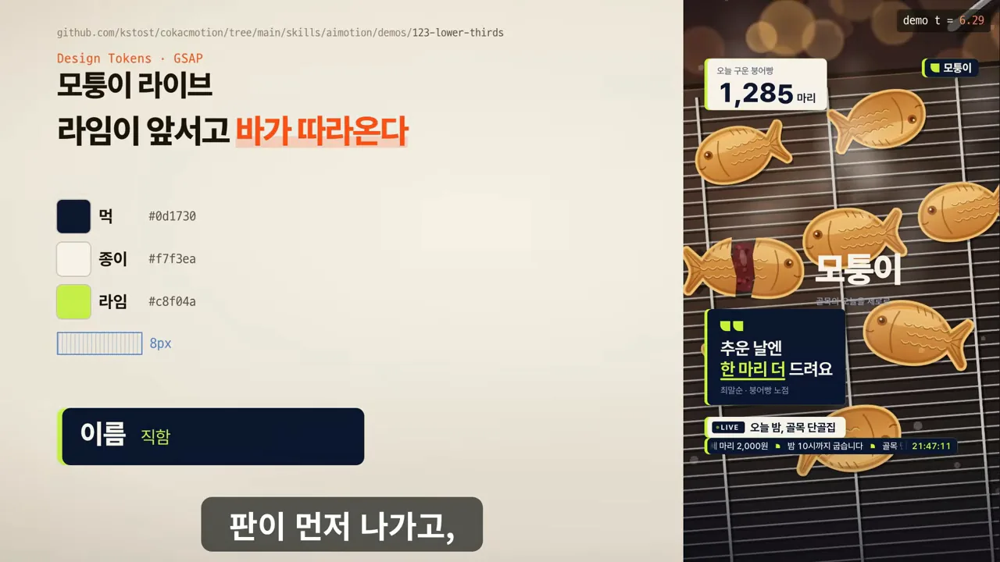
메신저 대화 장면은 말풍선 크기를 글자에서 계산해요. 어절 단위로 줄을 바꿔 보며 너비를 재고, 가장 긴 줄에 맞춰 말풍선이 줄어들어요. 새 메시지가 올 때마다 목록을 용수철로 한 칸씩 끌어올려요.
비 오는 정류장 — 툰 셰이딩
툰 셰이딩(셀 셰이딩)은 빛의 양을 세 단계로 잘라 만화처럼 칠해요. 셀 애니메이션처럼 몇 가지 단색 띠로 명암을 칠하는 방식이에요. 화면 왼쪽 위 공 두 개가 '그대로'와 '세 단계로 자름'이고, 가운데 계단 그래프가 빛의 양을 자르는 함수예요.
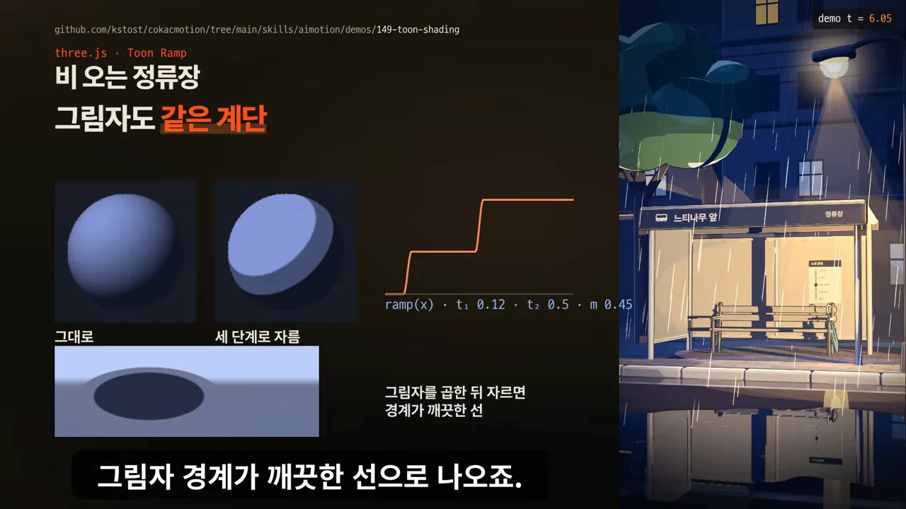
촬영과 편집의 연출도 계산식으로
이번에는 촬영과 편집에서 쓰는 연출 기법들이에요. 카메라 셔터, 편집점, 시선 같은 '연출'도 계산식이 되면 t 하나로 정해져요.
세 번 찍는 도장 — 임팩트 키트와 히트 스톱
같은 도장을 톡, 탁, 쾅 점점 세게 찍어요. 흔들림·섬광·고리·파편 같은 효과를 박자마다 쌓는 방식인데, 이걸 임팩트 키트라고 불러요. 화면 오른쪽 판 더미가 박자마다 쌓는 겹수예요. 톡은 3겹, 탁은 6겹, 쾅은 10겹이에요.
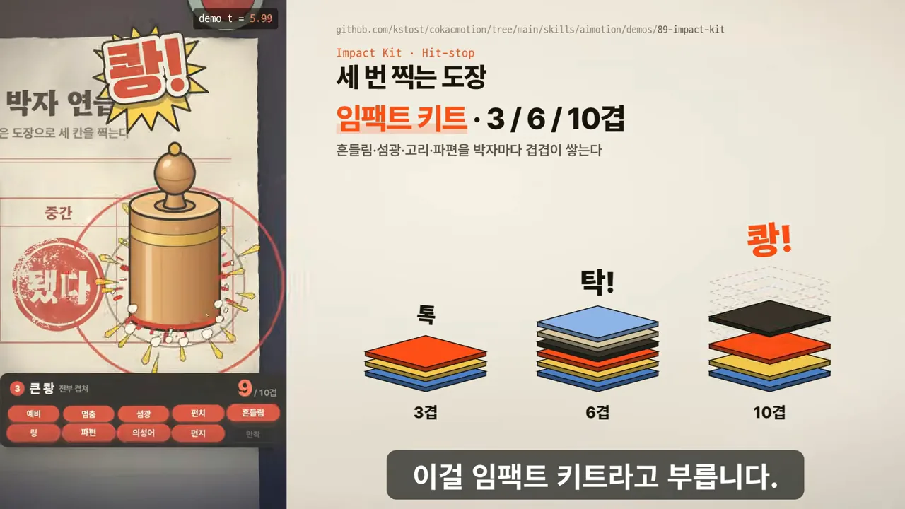
이 멈춤도 따로 기억하는 상태가 아니에요. 지금 시각에서 멈춘 만큼을 빼 주는 계산일 뿐이에요. 사진 플래시가 터지는 찰나처럼 닿는 순간 세상 시계를 세우고, 그동안 섬광을 켜 둬요.
다 같이, 멈춰 — 닫힌식 물리
튀는 콩, 흔들리는 푸딩, 도는 동전이 정확히 같은 순간에 멈춰요. 쓰인 기술은 닫힌식 물리예요. 한 걸음씩 시뮬레이션하지 않고, 어느 순간이든 위치를 바로 계산하는 식을 써요. 화면의 곡선처럼 튈 때마다 높이가 같은 비율로 줄어드니, 바닥에 닿는 시각(1.62, 2.09, 2.35, 2.49 …)을 미리 다 알 수 있어요.
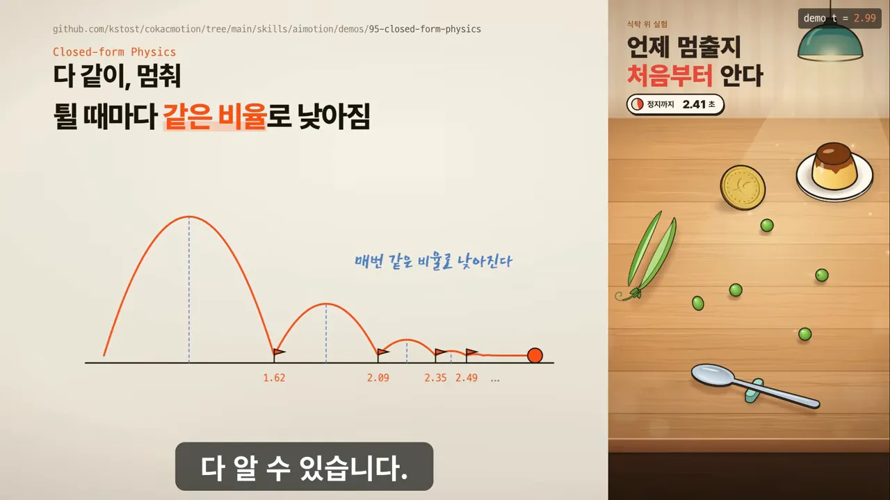
눈 위의 박자 — 보행 주기
토끼가 깡충깡충, 닭이 뒤뚱뒤뚱 걸어가요. 보행 주기라는 기법이에요. 걸음을 디딤과 들어 올림이 되풀이되는 한 바퀴로 보고 시간마다 발의 자리를 정해요. 화면 가운데 원이 그 한 바퀴(0.6초)이고, 주황이 디딤, 파랑이 들어 올림이에요.
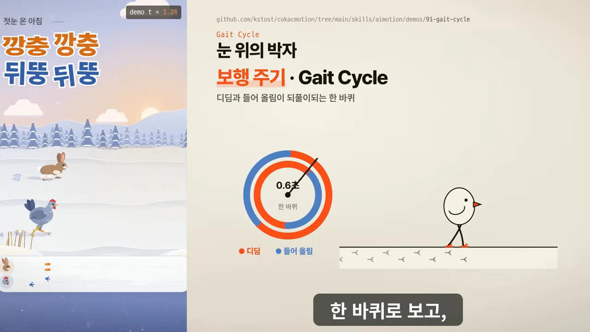
구름 위의 아침 — HUD 계기판
열기구가 오르는 높이를 숫자와 바늘과 줄자로 재어 보여 줘요. 이렇게 재는 장치를 화면에 띄우는 연출을 HUD 계기판이라고 해요. 숫자는 자동차 주행거리계처럼 바퀴가 돌아가요. 화면의 2,460m 바퀴들이 그 숫자예요.
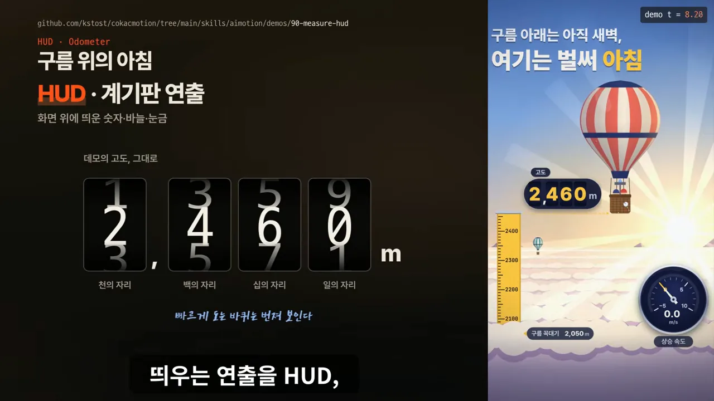
책방 고양이는 어디에 — 시선 유도와 피사계 심도
숨은 고양이를 찾는 책방 장면에서는 빛이 책장을 더듬다가 고양이를 찾아 멈춰요. 시선 유도라는 연출이에요. 보여 주고 싶은 곳만 밝히고 나머지는 어둡고 흐리게 해서 보는 사람의 눈을 이끌어요. 화면 가운데 그림이 빛이 옮겨 다닌 순서이고, 오른쪽 막대가 머문 시간이에요.
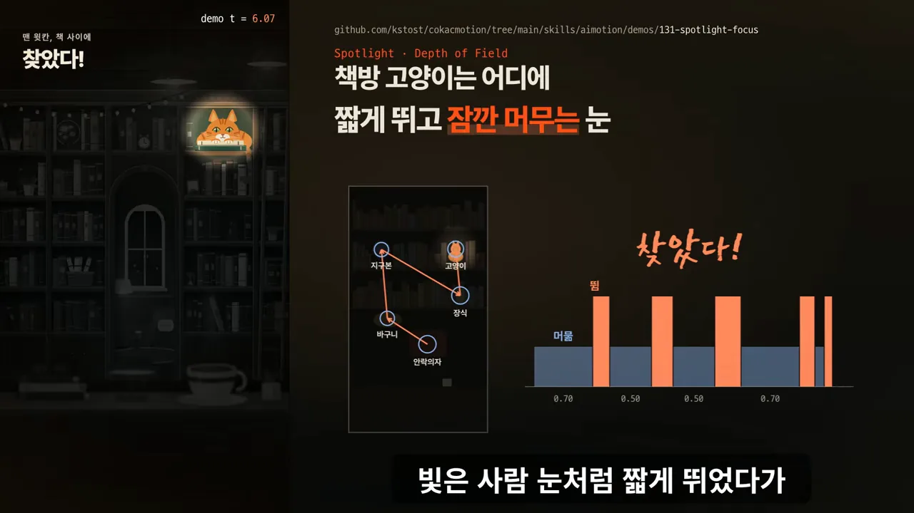
초점 효과는 피사계 심도예요. 거리마다 얼마나 흐려질지를 렌즈 공식으로 계산해서 장면의 층마다 다르게 흐리게 해요. 어두운 무대의 핀 조명처럼 보여 줄 것만 남기고 나머지는 색과 빛을 빼요.
창밖의 하루 — 타임랩스와 장노출
18시간이 넘는 하루를 10초에 담아요. 타임랩스라는 기법이고, 핵심은 시간 압축과 장노출이에요. 셔터가 오래 열려 있던 것처럼 그동안 지나간 빛을 겹쳐 그려요. 화면 위 다섯 칸(−4분 … +4분)이 셔터가 열린 동안의 순간들이고, 아래 한 장이 그걸 겹친 결과예요.
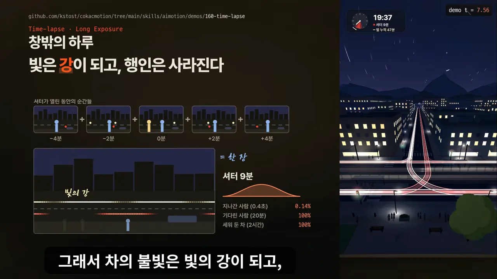
글자 모션그래픽
마지막은 글자로 만드는 모션그래픽이에요. 글자를 움직이는 대신 카메라를 움직이거나, 글자를 블록·터널·키 입력으로 바꿔 보는 방법들이에요.
오늘은 그냥, 한 번 — 키네틱 타이포그래피
종이 한 장에 글자를 딱 한 번만 놓고 카메라만 날아다니며 읽어 줘요. 키네틱 타이포그래피라는 장르예요. 화면 가운데 그림처럼 카메라 틀(주황 사각형)이 '오늘은', '그냥', '한 번' 사이를 돌며 옮겨 가요.
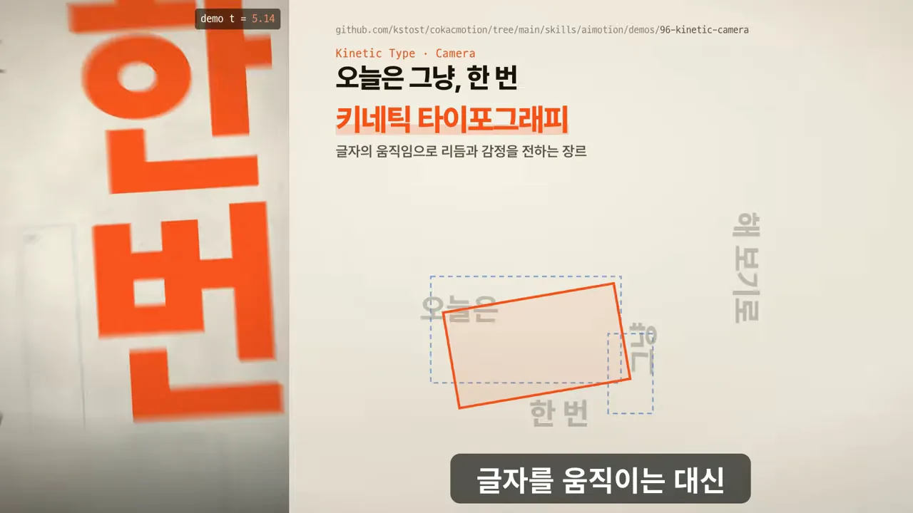
쌓으면, 꿈 — 복셀 글자와 헝가리안 알고리즘
블록이 떨어져 글자를 짓고, 다시 날아올라 다른 글자가 돼요. 아이소메트릭 복셀 글자예요. 글자를 격자로 잘라서 칸의 절반 이상이 채워지면 그 칸을 블록 하나로 만들어요. 화면 가운데 주황 칸들이 그렇게 고른 칸이에요.
'오늘의 빈칸'은 문장 속 한 단어를 갈아 끼우는 단어 교체 키트예요. 잘라서 바꾸고, 굴려서 바꾸고, 슬롯머신처럼 돌려서 바꾸는 효과를 시간표 하나로 불러요. 낱말 폭이 바뀌면 문장 전체를 매 프레임 다시 가운데로 맞춰서, 옆 글자들이 튀지 않고 미끄러져요. 옆 사람이 살짝 비켜 앉듯 자리를 다시 맞추는 거예요.
오늘이라는 터널 — 원통 좌표
글자로 된 터널 속을 3D로 질주해요. three.js로 만들었고, 글자마다 원통 좌표, 즉 길 위의 거리·각도·반지름을 줘서 벽에 붙여요. 글자마다 '몇 번째 고리에 몇 시 방향'인지 주소만 적어 두면 터널 벽에 착 붙어요.
보내기 전에 — 두벌식 오토마타
메신저에 한글을 치고 지우는 과정을 그대로 보여 줘요. 두벌식 입력기의 조합 규칙을 코드로 옮겼어요. 자음과 모음이 들어올 때마다 글자가 모이고, 받침이 다음 글자로 넘어가기도 해요. 화면처럼 ㄴ, ㅓ, ㅁ이 들어오면 '넘'이 되고, 이어서 ㅜ가 들어오면 ㅁ이 다음 글자로 넘어가 '너무'가 돼요.
'접힌 쪽지'는 접선을 따라 종이가 열리며 글자가 드러나요. 경첩이 이어진 사슬로 계산해요. 앞 경첩이 돌면 뒤에 달린 조각들이 통째로 따라오는 순운동학이에요. 회전축을 종이 두께의 절반만큼 띄워 두니 다 접으면 정확히 한 겹 위에 포개져요. 기차 칸을 이어 붙인 것처럼 앞 칸이 꺾이면 뒤 칸이 모두 따라 움직여요.
취급주의, 오늘의 주인공 — 끝없이 흐르는 테이프
글자가 흐르는 테이프가 상자를 감아요. 글자 띠의 위치를 띠 길이로 나눈 나머지로 정해 끝없이 흘러가게 해요. 러닝머신 벨트처럼 무늬가 한 바퀴 돌면 처음으로 돌아와요.
라면 물 조절 실패 — 예능 자막
예능 프로그램의 자막을 코드로 만든 작품이에요. 겹 테두리와 튀어나오기가 핵심이에요. 두꺼운 테두리부터 차례로 겹쳐서 이웃한 글자의 테두리가 한 덩어리로 이어지게 해요. 케이크에 크림을 두르듯 두꺼운 테두리부터 얇은 테두리까지 차례로 덧칠해요.
모두 웹에서 바로 재생해요
작품마다 기법은 달라도 원리는 같아요. 오늘 본 데모는 전부 웹에서 직접 재생해 볼 수 있어요. 화면 위 주소창의 kstost.github.io/cokacmotion/05-fbm-nebula/처럼 브라우저 주소 하나로 열리고, 노트와 코드도 함께 볼 수 있어요.